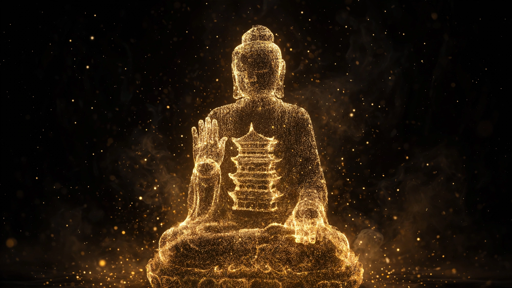
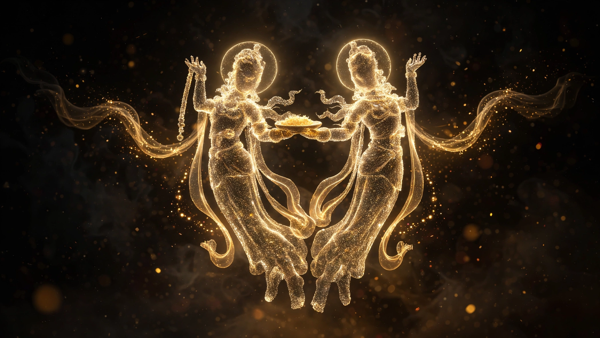
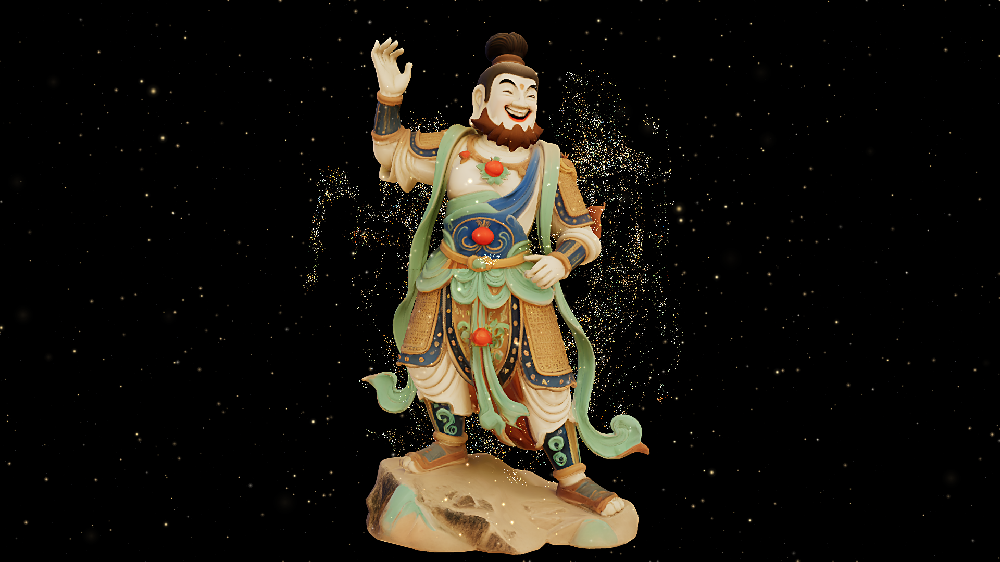
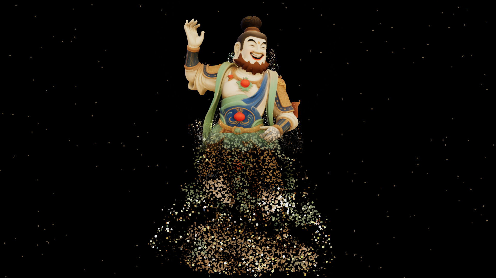
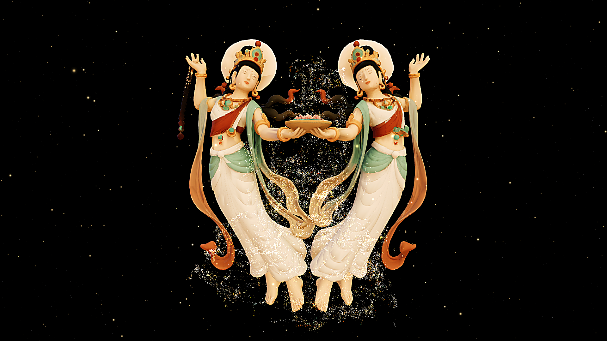
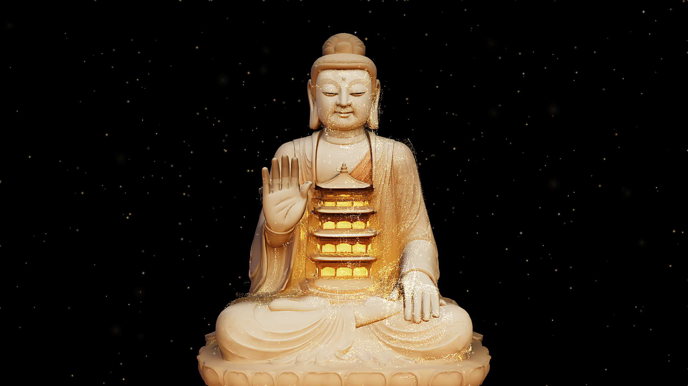

STONE REVEAL
Dunhuang's statues stand outdoors, where wind, sand and sun are slowly erasing their faces. Here, four Buddhas are rebuilt as drifting firefly dust — no headset, no controller, only your hands. Brush the dust away with devotion, and watch the golden body shine again.

Contemplate
Under wind and sand, the Buddha’s face is blurring — for now, the Buddha is a breathing cloud of particles. “Touch gently. The Buddha waits to be lit.”

Reveal
The oldest devotion is wiping with your own hands — wherever they pass, the painted gold emerges from the dust.

Bless
The dust settles, the golden body is whole — and a blessing is drawn for you. Twelve blessings, never twice the same.
Most of Dunhuang’s statues stand outdoors — wind and sun pass over them year after year, and their faces are slowly blurring, fading away. This prototype is a blessing ritual: the old devotions — wiping the statue, keeping its lamp lit — become things your body can do inside a browser. As the faithful drift away, the Buddha-light dims; it is your hand, brushing the dust away, that brings the golden body back. May this one touch also turn your gaze toward the heritage that is disappearing.
Your hands are the ritual.

- 01One hand, swipe — turn the pages of Buddhasswitch between the four figures
- 02Palms together, hold — and the gold answershold one second to enter the golden phase
- 03Pinch — draw the Buddha near or farscale 0.5×–1.5×, pose never moves
- 04One fingertip — brush the dust awaya golden ring follows your hand
Tap ✋ GESTURE at the top-right of the demo and let the camera see your hands. No camera? Keyboard and mouse walk the whole ritual too.
Try it right here.
Before you play: first visit takes a minute or two — four Buddhas are loading. For gesture play, tap ✋ GESTURE at the top-right of the demo and allow the camera.
Gesture mode needs a camera and a desktop browser. Without one, keyboard and mouse play the whole ritual just fine.
Watch the ritual.

The film could not load. Please check your connection and try again.
A recorded walkthrough — particles, wiping, the golden body and the blessing card.